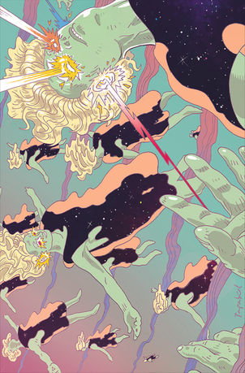
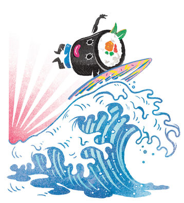

Papaboule y Plex-up: la imagen entre lo humano y el sistema
Una lectura clara del núcleo de Plex-up: la tensión entre lo analógico, lo digital y la fragmentación contemporánea del retrato.
Plex-up no es solo una nueva serie de Papaboule, sino una forma de situar la imagen en el punto exacto donde hoy se cruzan lo humano y el sistema. A partir de la tensión entre materia, fragmentación y estructura, este texto recoge el núcleo del artículo “Latencias análogas” y lo traduce a un lenguaje claro para mostrar por qué la obra de Papaboule resulta tan relevante en el presente.

Hay algo que el artículo Latencias análogas: Papaboule y Plex-up deja claro desde el principio: no estamos ante una simple evolución estética.
Estamos ante una obra que se sitúa justo en el lugar donde hoy ocurre uno de los conflictos más interesantes de la imagen: entre lo humano y su traducción en sistema.
Y eso cambia completamente cómo hay que leer Plex-up.
El retrato ya no es solo un rostro
En Papaboule, el retrato no desaparece.
Pero tampoco se mantiene intacto.
Lo que vemos son rostros que siguen ahí —presentes, reconocibles— pero atravesados por estructuras: tramas, patrones, fragmentaciones y geometrías que los reorganizan.
No es destrucción.
Es transformación.
Ahí está una de las ideas más potentes del artículo: la imagen ya no puede sostenerse como algo puramente orgánico, porque hoy siempre está mediada por algo más.
Y ese “algo” es el sistema.
Lo analógico no desaparece: resiste
Uno de los puntos más importantes del texto es este: Papaboule no sustituye lo humano por lo digital.
Lo que hace es ponerlos en diálogo.
- la piel sigue ahí
- el gesto sigue ahí
- la presencia sigue ahí
Pero todo eso convive con otra lógica:
- repetición
- modulación
- estructura
- fragmento
Es decir, la lógica de los sistemas visuales contemporáneos.
Y ahí está la clave: no es una imagen digitalizada, es una imagen atravesada por lo digital sin dejar de ser humana.
Fragmentar no es romper, es mostrar
Sería fácil pensar que estas obras rompen la imagen.
Pero la lectura más interesante es otra: la fragmentación no es un efecto, es una forma de revelar.
Revelar que hoy la imagen:
- nunca llega limpia
- nunca es única
- nunca es completamente estable
Siempre está mediada, reconstruida, reinterpretada.
Papaboule no inventa eso.
Lo hace visible.
La materia sigue siendo central
Y aquí hay otro punto que no se puede perder: esto no es un trabajo frío.
No es un ejercicio digital.
No es una simulación.
Hay pintura.
Hay materia.
Hay decisión manual.
Eso es lo que evita que la obra se convierta en un simple comentario sobre la tecnología.
Porque lo que vemos no es tecnología representada.
Es tecnología integrada en la experiencia de la imagen.
Donde está el verdadero nivel
Muchos artistas trabajan con lo digital.
Muchos trabajan con la fragmentación.
Pero muy pocos consiguen mantener al mismo tiempo:
- complejidad
- presencia
- belleza
- tensión
Papaboule no pierde la imagen al transformarla.
La hace más densa.
Más contemporánea.
Más real para el momento en el que vivimos.
Una imagen en tensión constante
La fuerza de Plex-up está en que no busca resolver la imagen.
La mantiene en tensión.
Entre:
- forma y función
- humano y sistema
- presencia y estructura
Y esa tensión no es un problema.
Es precisamente donde está su valor.
Final
Plex-up no es solo una serie nueva.
Es una forma de situar la imagen en el lugar donde realmente está hoy:
entre lo que vemos
y lo que lo atraviesa.
Papaboule no elige un lado.
Trabaja en el conflicto.
Y ahí es donde su obra se vuelve relevante.
La próxima subasta en Carabanchel será una buena ocasión para ver esta tensión en directo. Más allá del evento, lo importante es que Papaboule ha encontrado en Plex-up una forma de hacer visible una de las preguntas centrales del presente: qué queda de lo humano cuando la imagen ya nunca llega sola.
How did this post make you feel?
Pick one reaction:

